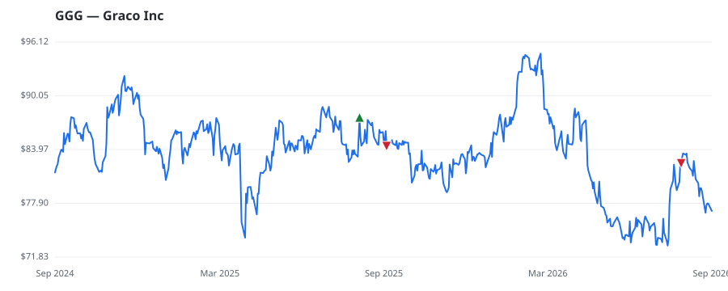

bullish · bearish · n/a — dots: price>SMA10 · SMA10>SMA50 · SMA50>SMA200 · up>down volume (20d)
Capital Goods · large cap
Members who bought GGG earned a dollar-weighted -3.5% from their disclosure dates, versus +1.9% for the S&P 500 over the same holding windows (-5.4% alpha).

▲ green = a disclosed purchase · ▼ red = a disclosed sale (plotted on disclosure date)
Graco manufactures equipment used for managing fluids, coatings, and adhesives, specializing in difficult-to-handle materials. Graco's business is organized into three segments: industrial, process, and contractor. The Minnesota-based firm serves a wide range of end markets, including industrial, automotive, and construction, and its broad array of products include pumps, valves, meters, sprayers, and equipment used to apply coatings, sealants, and adhesives. The firm generated roughly $2.2 billion in sales in 2025. PUMPS & PUMPING EQUIPMENT · website
| Revenue | $2.2B | Net income | $521.8M |
|---|---|---|---|
| Operating income | $624.8M | Diluted EPS | $3.08 |
| Assets | $3.3B | Equity | $2.7B |
| Member | Chamber | Out-performer | Disclosed buys $ | Return on buys |
|---|---|---|---|---|
| Lisa McClain | house | — | $8K | -3.5% |
Disclosed $ figures are bracket midpoints — filings report ranges (e.g. $1,001–$15,000), not exact amounts.
| Fund | Fund alpha vs SPY | Position | % of book |
|---|---|---|---|
| Addenda Capital Inc. | +6% | $3M | 0.1% |
| SWS Partners | +8% | $2M | 0.5% |
Hedge data: SEC EDGAR 13F · ranked funds beat SPY in >50% of their quarters · fund alpha = mirror-portfolio return minus SPY.